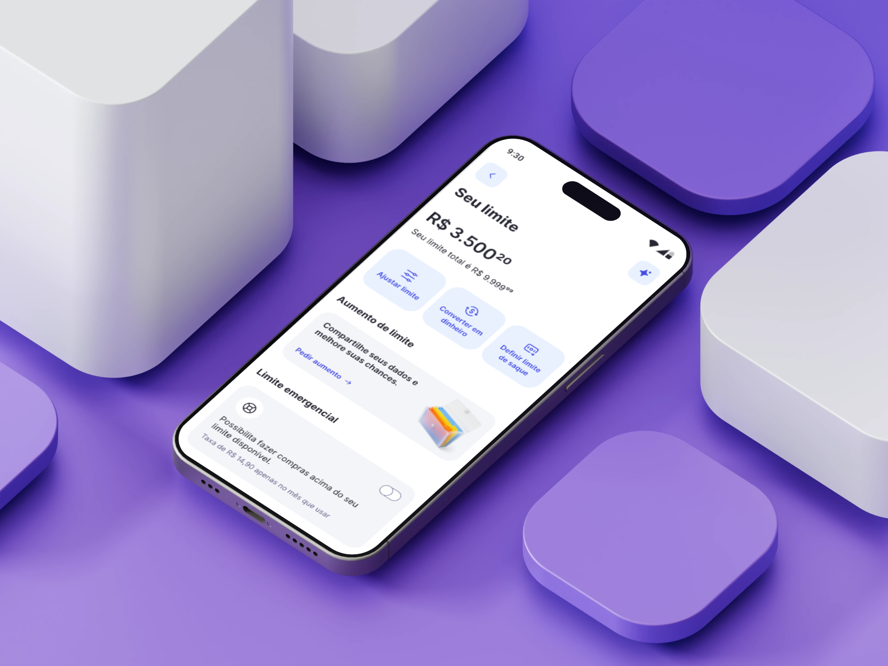
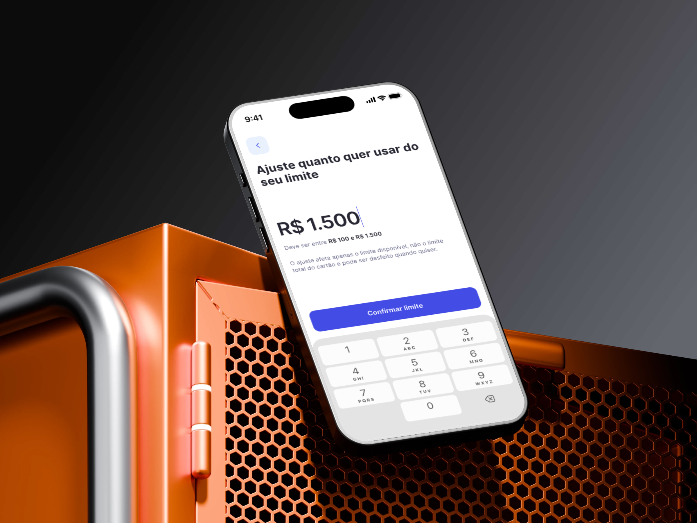
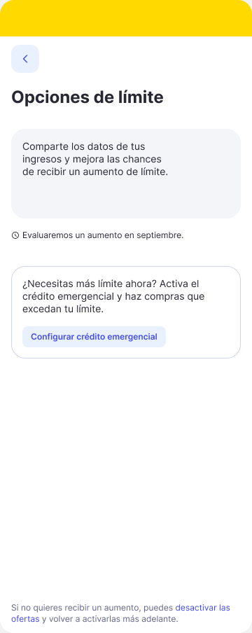
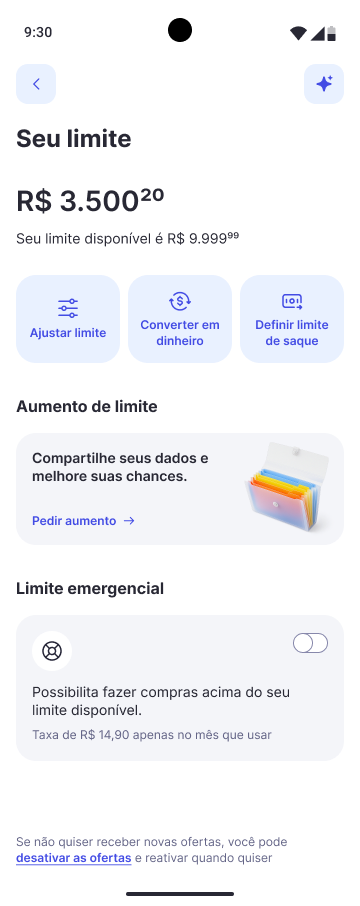

02.
Redesenhando a experiência de gestão de limites do cartão com foco em autonomia, clareza e nas necessidades reais dos usuários.
O desafio
Como transformar uma tela limitada em uma experiência de gestão?
Antes, a tela de limites se resumia ao envio de documentos para solicitar mais crédito, com problemas de clareza e hierarquia visual.
O desafio era transformá-la em um espaço de gestão mais intuitivo, útil e preparado para novas funcionalidades.
A oportunidade
Uma necessidade identificada na voz das pessoas.
Analisando avaliações na App Store, Google Play e feedbacks de CX, identificamos um desejo recorrente: mais autonomia para gerenciar o próprio limite de crédito.
A experiência
Um novo hub para dar mais autonomia ao usuário.
Reestruturamos a experiência para reunir funcionalidades de gestão do limite em um único lugar.
Entre as novidades, o ajuste de limite permite que o usuário escolha o valor exato que deseja disponibilizar, respeitando o crédito aprovado e os valores já utilizados na fatura.
O ajuste de limite
Mais liberdade para escolher, com clareza sobre cada decisão.
Desenhamos uma experiência que permite ao usuário definir exatamente quanto do seu limite deseja disponibilizar, sem depender de valores predefinidos.

Design
principles
Escalabilidade
O equilíbrio entre o funcional e o emocional.
Na empresa, os Design Principles orientavam a construção das experiências a partir de três abordagens: funcional, equilibrada e emocional.
Para o Hub de Limites, escolhemos a abordagem equilibrada, combinando a clareza e a objetividade necessárias para gerenciar o crédito com uma comunicação mais próxima e acolhedora.
Essa direção guiou a criação de uma experiência modular, consistente e adaptável às particularidades de diferentes países.
Antes e
depois

